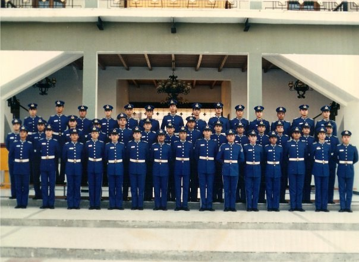
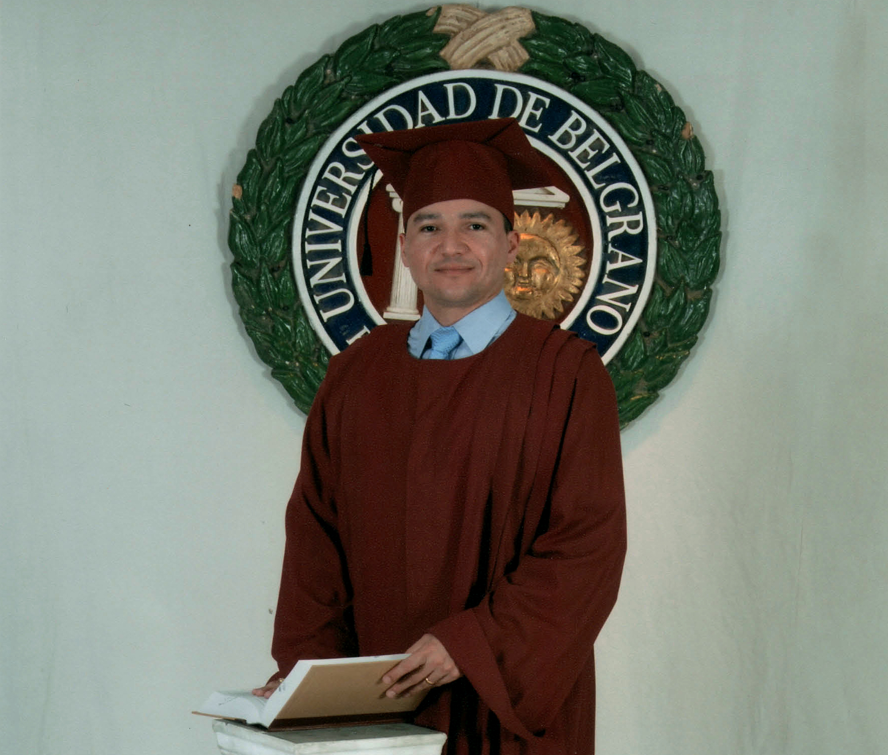

Con el sueño de convertirse en doctor, encontró un camino inesperado al unirse a las filas del Ejército Venezolano. Ingresó a la prestigiosa 42 Brigada de Infantería de Paracaidistas en Maracay, donde tuvo la oportunidad de participar en la Operación Rescate de la Dignidad Nacional en el año 2002. Fue durante este tiempo que descubrió su fe y decidió vivir de acuerdo con los principios de Dios.
AUTOBIOGRAFÍA
MIS PADRES, MI EJEMPLO
"No podría empezar a contar mi historia, sin antes mencionar a mis padres, quienes considero fueron fundamental en mi vida, no solo por el hecho de darme la vida, también por la crianza llena de amor constante, principios y valores, fundamentados en Dios. Mi padre, Aníbal José Lanz Urbano y madre, Meris Padrón Romero, ambos nacidos en el estado Bolívar, Guasipati y Upata respectivamente, se conocieron en su juventud, consolidando la unión de la familia Lanz Padrón con el nacimiento de mi hermana Azucena Lanz, años después nacieron mis hermanos Leonardo y Adriana, siendo yo el último hijo. "
MIS INICIOS
El día 09 de abril del año 1971 nací en Valencia estado Carabobo, siendo el menor de mis doce hermanos. Me crie con mis padres y mis hermanos Leonardo y Adriana. Los primeros años de mi infancia, transcurrieron entre Valencia y Maracay, a los tres años de edad nos mudamos a Caracas a los Jardines del Valle. Siempre fui un niño apasionado por el deporte y la música, desde los cuatro años de edad tocaba cuatro. Recuerdo que mis hermanos se quedaban estudiando hasta tarde y a mí me daban permiso de salir a jugar, cuando entregaban las notas en el colegio, a pesar que no me esforzaba en estudiar por tantas horas como lo hacían mis hermanos mayores, siempre destacaba académicamente.
SEGUNDA INFANCIA
Mi segunda infancia transcurrió entre Caricuao y Ciudad Bolívar, este último lugar nos permitió tener contacto con la naturaleza y los animales, recuerdo que a pesar de que mis hermanos y yo teníamos una diferencia de edad, estudiábamos juntos, debido a que solo existía una escuela rural, básicamente hecha de palos y zinc. Fue una etapa muy significativa de nuestra infancia.
ACADEMIA MILITAR, UN PASO A LA REVOLUCIÓN
Siempre soné con estudiar medicina, anhelaba convertirme en un gran doctor, pero con el reciente fallecimiento de mi madre, estando en los últimos años de bachillerato, la situación se tornaba difícil para estudiar medicina, así que opté por inscribirme en la Academia Militar. Nunca imagine que esa decisión años después me llevaría formar parte de la 42 Brigada de Infantería de Paracaidista en Maracay, donde participaría en el rescate del presidente Hugo Rafael Chávez Frías en La Orchila.


42 BRIGADAS DE INFANTERÍA DE PARACAIDISTAS
En el año 1993, a los 22 años ascendí al grado de subteniente, obteniendo la posición número veintiocho de ciento setentaicuatro alféreces que integraban la promoción “Gran Mariscal de Ayacucho Antonio José de Sucre” de la Academia Militar de Venezuela. Ese mismo año ingrese a la 42 Brigada de Infantería de Paracaidista, en la ciudad Maracay, estado Aragua, donde realice varios cursos, entre ello se destacan: Paracaidista Guía Aéreo Avanzado ese mismo año, Maestro de Salto en el año 1994, Empaque de Paracaídas Militares en el año 1995, Caída Libre Militar en el año 2001, entre otros.
MIS HIJAS, MI RAZÓN DE SER
El 14 de agosto de 1996 nació mi primera hija, Estefanía Lanz Lo Curto, en la ciudad de Maracay, estado Aragua. Estefanía es muy parecida a mí, no solo físicamente, sino también en su comportamiento y forma de ser. Tres años después, el 15 de julio de 1999, nació Rashel Lanz Lo Curto, la menor de mis hijas. Recuerdo claramente su nacimiento, pesó 2 kilos con 600 gramos, en la ciudad de Los Teques, estado Miranda. Rashel siempre fue una niña tímida y sensible, pero cuando se sentía segura con las personas, mostraba una espontaneidad encantadora. Hoy en día, ambas son mujeres profesionales que inspiran con su forma de ser. No podría estar más orgulloso de ser su padre.

CADA 11, TIENE SU 13
El 11 de abril del año 2002, en la Cuna de la revolución, la 42 Brigada de Infantería Paracaidista, bajo los preceptos Constitucionales, Bolivariano e Inmensamente Revolucionario, junto al Estado mayor, declaramos su adhesión a la Constitución y se activa la Operación Rescate al Hilo Constitucional, los patriotas revolucionarios recuperamos el palacio de Miraflores. Finalmente, el 13 de abril Hugo Rafael Chávez Frías es liberado en La Isla Orchila y llama a la calma por televisión y la tranquilidad se reestablece.
MISIÓN DE ESTUDIOS, REPÚBLICA DE ARGENTINA
En el año 2005, me dieron a elegir entre ir a estudiar un postgrado a la Escuela de Guerra en España o Argentina. Ya anteriormente había visitado Argentina, así que opte por esta última opción. El 31 de agosto de ese mismo año, teniendo el grado de Capitán del Ejército, me designan en misión de estudio según resolución Nro DG-32334, para realizar un Post-Grado en “ESTRATEGIA GEOPOLÍTICA” en la Escuela Superior del Ejercito de la Republica de Argentina. Así fue como el 14 de diciembre del año 2005 viajo nuevamente a Argentina con mi familia para cursar estudios superiores.
ASCENSO AL GRADO DE MAYOR
El 05 de Julio del año 2006, años 196 de la Independencia y 147 de la Federación, se emite por parte de Ministerio de la Defensa de la Comandancia General del Ejército, mi ascenso al grado de Mayor.


ESTUDIOS SUPERIORES, REPÚBLICA DE ARGENTINA
En 24 de abril de 2009, se emite el retiro de Mayor, en Venezuela, ese mismo año regreso a la ciudad de Buenos Aires, Argentina, para terminar la Maestría en Administración de Empresa Mención Administración Estratégica y la Maestría en Relaciones Internacionales en la Universidad de Belgrano. En la misma universidad, realice una Maestría en Política Económica Internacional, en la tesis de grado plasme uno de los sueños de nuestro comandante invicto, Hugo Rafael Chávez Frías, ser parte de la idea de que las experiencias de economía populares y de comunión, junto con las políticas orientadas a desarrollar las capacidades de los más desfavorecidos, y donde el respeto por los derechos humanos, cumplen un papel fundamental, más que programas compensatorios y asistencia han desarrollado la vía para reducir las desigualdades inherentes al sistema capitalista y globalizador que parece imponerse en todo el orbe.
DESIGNACIONES SENIAT
En abril de 2013, me designan como Gerente de Almacenamiento y Disposición de Bienes Adjudicados del Servicio Nacional Integrado de Administración Aduanera y Tributaria (SENIAT), en Caracas, cumpliendo funciones por ocho meses, hasta el 19 de noviembre del mismo año, que me designan mediante Providencia Administrativa Nro SNAT-2013-0071 como Gerente Regional de Tributos Internos de la Región Centro Occidental del SENIAT, en Barquisimeto, Lara.Cargo que desempeñe por dos años y dos meses.
MISIÓN DIPLOMÁTICA, REPÚBLICA DE ARGENTINA
El 16 de diciembre de 2016 me nombran como Ministro Consejero en Comisión, en la Embajada de la República de Venezuela en la República Argentina. Viajo nuevamente a la ciudad de Buenos Aires, donde estuve por cuatro años hasta que regrese a Venezuela el 20 de diciembre de 2021 para cumplir funciones dentro del Gobierno Bolivariano de Aragua.
2021, NUEVOS INICIOS
A finales de 2021, estando aun en la Republica de Argentina, me escribe una hermana en Cristo, me dice que le han propuesto ser la candidata a Gobernadora del estado Aragua, por el Partido Socialista Unido de Venezuela (PSUV). Desde el momento en que me dio la noticia, supimos que el camino ya estaba marcado por Dios. El 21 de noviembre de ese mismo año, ganó las elecciones y se convirtió en la primera mujer Gobernadora del estado Aragua. Me pidió que viniera a Venezuela para ser parte de su equipo de trabajo, que le acompañara en su gestión, que soñaba con hacer grandes cosas para el estado Aragua. Mi respuesta fue: Solo quiero servir, y este es el momento porque una mujer de Dios justa va a Gobernar.